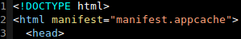

WAT? - simple  MIME type text/cache-manifest CACHE MANIFEST # version 0.1 CACHE: /js/app.js /css/app.css /img/sprite.png NETWORK: *
Kewl Easy setup Full offline support Takes a _lot_ of the load off the server Degrades gracefully Dedicated long-term cache space instead of browser-global cache Just like in Strömsö?
Hold your horses Dev-mode hassles A single 404 invalidates the _whole_ cache The HTML doc cached always (wait what?) No granular JS API What about RWD and images? (lack of) user control or knowledge of offline support So you have an update...
Moar Use it, but be careful with it http://appcachefacts.info/ A List Apart: Application Cache is a Douchebag by Jake Archibald Application Cache: Douchebag slides by Jake Archibald Improving app cache by Steve Souders TJEU: chrome://appcache-internals/